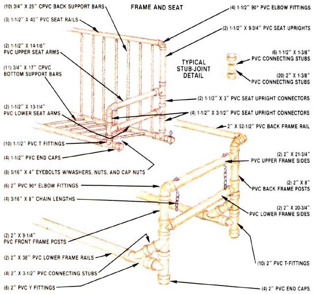
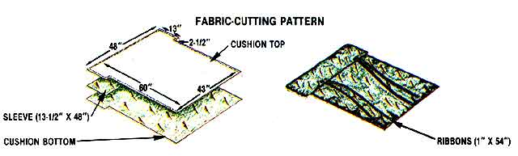

Issue # 87 - May/June 1984 Slip-joint plumbing may have a place not only under your house but in it, as well.
In MOTHER NO. 85 (page 148), we featured a design for an old-timey pie safe offered to us by The Family Workshop. For the spring season, the Oklahoma-based outfit has worked up this plastic-pipe porch glider, which the Workshop folks feel will have as much appeal to MOM's readers as it did to the fans of their own crafts books and syndicated newspaper columns.
If front porches were made for lazy spring and summer evenings, then gliders were made for front porches . . . and though it may seem that the swinging settee has gone the way of Rhett and Scarlett, there's no reason why you can't rediscover its pleasures by re-creating this leisure lounge, using modern materials.
I'd suspect that the earliest gliders were made of hardwoods, which eventually gave way to steel with the onslaught of mass production. But our updated version consists mainly of plastic plumbing pipe (polyvinyl chloride, or PVC for short), which has the admirable qualities of strength, workability, reasonable cost, and universal availability.
There are, however, a few important things you ought to know about the components before you get into the "swing" of things. First off, there are seven different formulations of plastic pipe, only two of which-PVC and its chlorinated cousin, CPVC-will be used for this project. (Each is available in a rigid, thick-wall design that is ideal for furniture building.)
Second, like conventional steel pipe, PVC is measured-nominally-by its internal diameter . . . but the outside dimension of similarly sized plastic pipe remains the same, regardless of the thickness of its wall. Theoretically, this allows the fittings in each size group to share the same inside diameter . . . but don't count on it: Minor tolerance differences between various manufacturers' hardware make it necessary to prefit the pipe and fittings prior to purchase. If a joint is too sloppy (or excessively tight), it would be advisable to try another fitting.
While on the subject of joints, be aware that you can build disassembly capability into this piece of furniture by locking the unions with self-tapping metal screws rather than cement. But should you choose to go the permanent (and far stronger) route, the mating surfaces must be prepared by roughing them lightly with fine sandpaper or steel wool (or cleaning them with plastic pipe primer) before they're chemically welded together. It is equally important to use the correct primer and cement for the type of pipe you're working with, since PVC and CPVC each use specific solvents. Moreover, once the mating surfaces are bonded, they're joined for good . . . so be careful not to paint yourself into a corner, so to speak, by gluing an assembly together without a trial fit. You may discover that the last section of pipe cannot be squeezed between two fittings, no matter how hard you try.
Finally, you don't have to settle for the PVC's standard white, gray, or cream colors. Once the frame's assembled, you can wipe it down with turpentine, then spray it with an oil-based primer and several finishing coats in whatever color you choose. Or in contrast to this, you might want to go for the "high-tech" look by leaving the surfaces unpainted and the printing on the pipe walls exposed. Yet another option is to take a clean and simple approach by removing the lettering with some automotive choke cleaner and a dry rag.
OK, so now you're an armchair authority on plastic pipe . . . the next step is to pay a visit to your local plumbing supply or hardware store and pick up the following materials: 26 feet of 2" rigid PVC pipe, 20 feet of the same blend in 1-1/2" diameter, and 40 feet of 3/4" rigid CPVC piping. To complete the joints, you'll also need a total of twenty-eight 2" PVC fittings (six 90° elbows, ten T's, eight Y's, and four end caps), eighteen 1-1/2" fixtures (four 90° elbows, ten T's, and four end caps), and a can of PVC cement.
While you're at it, you'll also need to purchase eight 5/16" X 4" galvanized eyebolts . . . an equal number of flat washers, hex nuts, and cap nuts to fit those fasteners . . . and about three feet of 3/16" coil chain. You may also want to get eight connecting links to join the chain to the eyebolts, but it's possible to save that expense by merely opening the fasteners' eyes with a pair of pliers, inserting the chain loops, and reclosing the eyes.
Before heading on home to piece together your project, you'll have to swing by the fabric shop to pick out 4 yards of 60"-wide upholstery material (a heavy cotton would be fine), 3 yards of 1" ribbon that complements the fabric, about 10 yards of standard quilt batting, one pound of polyester fiberfill, and some heavy-duty thread. With that done, all you'll need in order to get started is a measuring tape, a marking pen, a hacksaw, a needle and some straight pins, a couple of pairs of pliers, a drill with a 5/16" bit, and a 7/8" diameter hole saw.
It's pretty easy to see how the various parts of the glider fit together by referring to the exploded drawing . . . and that illustration can also be used to determine the lengths to which you'll have to cut each "raw" section of pipe. Beyond that, there are just a few things you might want to keep in mind as you slip-joint your settee together.
To help organize matters, it'd probably be a good idea to approach this project as three independent tasks, concentrating on building the glider's frame, seat, and cushion sets separately. The frame is a freestanding structure from which the glider seat is suspended, and it's composed of five sections: two identical side assemblies, a pair of horizontal leg members, and a back rail. All the components of this sub-assembly are made from 2" PVC pipe and fittings, and the lengths indicated assume a standard fitting socket depth of 3/4". Note that you'll need to cut a total of twenty 1-3/8"-long connecting stubs to join adjacent fittings together; if any of your fittings have "odd" collars, you may have to adjust the length to compensate for any differences in their design.
I found it easiest to make the two side assemblies first (starting with their back posts and working forward), and then to work on the leg sections, beginning at the corners. After finishing the back rail, it wasn't too difficult to connect the sides to the leg sections one at a time and to wrap up by slipping that rear bar into place. Again, I can't overstress the importance of prefitting the parts to their mates before you even touch the glue pot . . . not just to check the soundness of the joints, but to familiarize yourself with the most effective order of assembly.
Once the frame was together and the cement had dried, I bored two 5/16" holes through the upper tube of each side section (the front ones just behind the elbows and those at the rear set 3" before the T's) to accommodate the four frame eyebolts. To prevent any eye (or arm!) sores, I covered the exposed ends of each inverted fastener with a cap nut.
The seat, like the frame, can be broken down into sections: the back, the front, the cushion support bars, and the arms. With the exception of the support bars, which are made of lengths of 3/4" CPVC, the seat is constructed entirely of 1-1/2" PVC pipe and fittings. The only trick in getting these together is to mind the fact that the support bars just slip-without glue-into 7/8" holes drilled through one side of each of the horizontal pipes that form the seat's back and front rails.
You'll notice that the tube at the crook of the seat has to accommodate the back and bottom support bars, so it's important to stagger the upper holes in relation to the forward-facing ones. In each case, the bores are spaced 3-3/4" apart (measured from their centers) . . . but the bottom is composed of eleven bars, while the back has only ten. Consequently, if both sets of holes are centered on the pipe, the openings will automatically fall in an alternating pattern.
Feel free to experiment, but you'll probably discover, as I did, that the seat will go together painlessly if you start with the back, working on the verticals from the bottom up . . . add the ten back support bars . . . and cap the array with the upper rail. Then you can go on to assemble the front rail (making sure the eleven holes and the fitting sockets face in the same direction) and join it to the completed back section with the seat supports and arm tubes between. The four remaining eyebolts can then be attached through the end caps at the corners and the entire seat hung from the frame with 8" lengths (more or less) of chain.
The glider's cushion is held in place by a sleeve that slips over the top of the seat back. You can refer to the cutting pattern to size your material correctly. After you've trimmed out the two main (front and back) pieces and a 13-1/2" X 48" sleeve piece, you can pin and then stitch the sections together.
This is most easily accomplished by first laying one cushion half (which will be the bottom) right side up on a flat surface, covering that with the face-up sleeve (you'll have to form a 1"-wide, double-turned hem along one long edge of it, and face that toward the center of the fabric), then placing the remaining cushion half on top, face down. The seam opposite the sleeve piece should be left unsewn to provide access for the quilt batting, which can be cut to shape and then stacked inside the completed cushion once it's turned right side out.
When the padding is smoothed in place, that final seam can be whipstitched shut and the length of 1" ribbon cut in two to form two 1-1/2-yard pieces . . . which should each be folded in half and attached, at the fold, to the edge of the cushion sleeve. The four strands thus created can be tied to the pipe at the base of the seat once the pad's installed.
If you want pillow cushions, you'll need to cut two 14" X 18" pieces of fabric for each one. Simply pin the halves right side together and stitch a 1"-wide seam along all the edges except for one short one. Then turn the pillowcase right side out, stuff it with fiberfill, and whipstitch the remaining seam edges together.
The final product, though not dirt cheap by any means (it'll cost about $150 to reproduce), is a functional and cleanly attractive piece of furniture that-depending on your taste-might serve double duty between your porch and an indoor family room as the seasons make their circuit.
EDITOR'S NOTE: If the idea of PVC furniture strikes your fancy, you'll be pleased to know that The Family Workshop (P.O. Box 159, Bixby, OK 74008) is offering a ten-item PVC project package for $12. It includes detailed assembly plans, not only for the glider described in Stevie Baldwin's article but for nine other pieces . . . a chaise longue, a lawn chair, a footstool, an end table, a yard swing, a picnic table, bunk beds, a child's desk, and an étagère. The entire plans package (specify Project No. 3266-2) is available from the address above . . . as is The Family Workshop's $2.95 color catalog that features hundreds of additional woodworking and needlecraft projects.
|
The finished glider suggests far more than just a melange of plumbing parts. The taste ful use of some oil-based paint and a coordinating fabric makes a world of difference, turning what would normally be a piece of outdoor furniture into an attractive indoor appointment as well. |
 |
 |